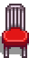
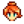
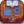

Roter Imbissstuhl
Zur Navigation springen
Zur Suche springen
| Roter Imbissstuhl | |
|  | |
| Kann in deinem Haus platziert werden. | |
| Information | |
| Quelle | Preis |
|  Schreinerladen: | |
|  Möbelkatalog: | |
| Verkaufspreis: | unverkäuflich |
Der Rote Imbissstuhl ist ein Möbelstück. Es ist regelmäßig im Schreinerladen für  750 G oder im Reisewagen für
750 G oder im Reisewagen für  250–2.500 G vorrätig.
250–2.500 G vorrätig.
Es ist außerdem im Möbelkatalog für  0 G erhältlich.
0 G erhältlich.